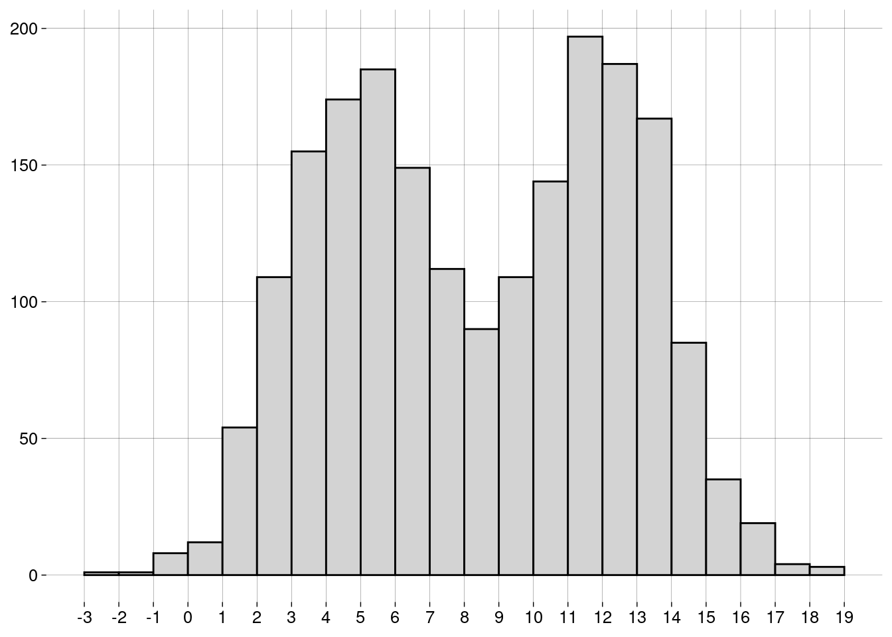

Capítulo 6 Medidas
6.2 Medidas de centralidade
6.2.1 Média
-
A média de uma população é escrita como \(\mu\), e é definida como \[\mu = \frac{\sum_{i=1}^N x_i}{N}\]
\(\sum_{i=1}^N x_i\) é a soma de todos os dados da população.
\(N\) é a quantidade de elementos na população.
-
A média de uma amostra é escrita como \(\bar x\), e é definida como: \[\bar x = \frac{\sum_{i=1}^n x_i}{n}\]
\(\sum_{i=1}^n x_i\) é a soma de todos os dados da amostra.
\(n\) é a quantidade de elementos na amostra.
O cálculo é essencialmente o mesmo. Só mudam os símbolos: \(N\) versus \(n\), e \(\mu\) versus \(\bar x\).
6.2.2 Mediana
Já aprendemos sobre a mediana na seção sobre boxplots.
A idéia é que, depois de ordenar os dados, \(50\%\) dos dados estarão à esquerda da mediana, e \(50\%\) à direita.
A mediana não é tão sensível a outliers quanto à média.
6.2.3 Moda
A moda é o valor mais frequente do conjunto de dados.
Pode haver mais de uma moda.
Não existe uma função para a moda em R base. Por quê?
Por incrível que pareça, é complicado definir a moda de forma a conseguir resultados interessantes.
-
Por exemplo, vamos definir um conjunto de \(1000\) valores numéricos distribuídos normalmente4, com média igual a \(5\) e desvio-padrão5 igual a \(2\):
normal <- rnorm(1000, mean = 5, sd = 2) -
O histograma dos nossos dados é

-
Vamos calcular a moda com a função
mfv(most frequent value), do pacotemodeest:## Registered S3 method overwritten by 'rmutil': ## method from ## print.response httr# Por causa de um bug na função mfv, # precisamos de números com ponto decimal # (em vez de vírgula): options(OutDec = '.') mfv(normal)## [1] -1.51036821 -0.88456530 -0.66184260 -0.45383202 -0.11497188 -0.03985058 ## [7] 0.02207113 0.09165548 0.12273698 0.15668587 0.16146363 0.18409172 ## [13] 0.45998518 0.54782652 0.56412524 0.66213536 0.68384806 0.73695755 ## [19] 0.80511700 0.81955152 0.85402375 0.91597719 0.92284311 0.94284253 ## [25] 0.97949330 0.99271319 1.00872578 1.02512711 1.02845269 1.10734512 ## [31] 1.11763610 1.13209278 1.21136545 1.23740821 1.31256106 1.36009974 ## [37] 1.36349542 1.40144728 1.40267456 1.40909096 1.43379451 1.44470681 ## [43] 1.47379767 1.49709838 1.52459116 1.54861391 1.55247897 1.55726259 ## [49] 1.59378238 1.65517013 1.65974987 1.67137906 1.67371612 1.68874137 ## [55] 1.70077619 1.70731475 1.72382235 1.79765660 1.81705176 1.84060916 ## [61] 1.86573659 1.86826664 1.87836446 1.90458753 1.92805822 1.92891030 ## [67] 1.96342072 1.97080881 1.97781357 2.00114894 2.06128496 2.08268627 ## [73] 2.08594546 2.09417645 2.09459092 2.09782768 2.09988089 2.11061384 ## [79] 2.11694637 2.12732970 2.12894852 2.13468722 2.16830712 2.16848013 ## [85] 2.18024841 2.18628392 2.18690544 2.18859348 2.19185592 2.23677754 ## [91] 2.23927625 2.26530011 2.26540373 2.27681538 2.27856821 2.30711949 ## [97] 2.32127058 2.32202954 2.32388716 2.33631461 2.34778073 2.35434593 ## [103] 2.36395890 2.37130757 2.37661095 2.38051225 2.39473701 2.39623599 ## [109] 2.40907686 2.42000314 2.42703035 2.42954260 2.44456684 2.47208441 ## [115] 2.47793857 2.49059250 2.49538731 2.50023106 2.52036862 2.55475530 ## [121] 2.59228839 2.59832301 2.60515514 2.61236577 2.62355094 2.62952340 ## [127] 2.64114631 2.64274931 2.65356766 2.65568550 2.67115586 2.68282424 ## [133] 2.69048526 2.69413192 2.70617948 2.71024124 2.71412931 2.71676671 ## [139] 2.71760014 2.73779190 2.74772720 2.76262084 2.77686026 2.78699526 ## [145] 2.79986357 2.80907686 2.80969642 2.81983319 2.82001458 2.82012689 ## [151] 2.82319160 2.82837972 2.83399316 2.83780890 2.83910980 2.84656705 ## [157] 2.84692926 2.85147405 2.85590855 2.85775008 2.86581440 2.87763329 ## [163] 2.88207312 2.88275063 2.88804046 2.89258601 2.90052828 2.90901183 ## [169] 2.91667668 2.91812866 2.92094802 2.93584956 2.95265371 2.95903703 ## [175] 2.97158421 2.97566711 2.98678496 2.98873700 2.99277681 3.00473291 ## [181] 3.00922348 3.01608962 3.01636512 3.02692964 3.03918477 3.04088918 ## [187] 3.04495597 3.05021931 3.05199149 3.05592708 3.06031548 3.06360015 ## [193] 3.06602662 3.07040284 3.07748404 3.08947358 3.09073193 3.11399717 ## [199] 3.12043980 3.12048855 3.12894894 3.13084497 3.13841999 3.15263268 ## [205] 3.16274985 3.16764612 3.17316680 3.19710279 3.19815866 3.20071308 ## [211] 3.20929190 3.21192976 3.21636937 3.22457312 3.22572130 3.22889206 ## [217] 3.23431301 3.23533411 3.23716739 3.24958056 3.25689339 3.25946585 ## [223] 3.26398882 3.26831730 3.27679521 3.27832694 3.28693956 3.31730676 ## [229] 3.32038167 3.32275541 3.32341485 3.33386432 3.34156536 3.34237339 ## [235] 3.34297288 3.34527354 3.35298151 3.35390522 3.35919371 3.36234330 ## [241] 3.36586041 3.39642992 3.40017787 3.40895974 3.40965426 3.41063985 ## [247] 3.41070354 3.42242315 3.42683320 3.42725313 3.44357152 3.45027417 ## [253] 3.45142440 3.45171704 3.45925141 3.47143323 3.49102229 3.49991172 ## [259] 3.51356485 3.52800739 3.53007746 3.54103011 3.55746048 3.55790097 ## [265] 3.58260580 3.58629383 3.60408506 3.60655197 3.60746351 3.60795582 ## [271] 3.61316572 3.62333405 3.62749412 3.62843538 3.63444693 3.63750008 ## [277] 3.64322711 3.66487729 3.66491872 3.66824738 3.67033299 3.67717672 ## [283] 3.69203865 3.69629517 3.69699311 3.70584797 3.70692082 3.70848947 ## [289] 3.71629357 3.72684926 3.72757008 3.73279045 3.73306829 3.74219055 ## [295] 3.75300765 3.75974847 3.76371436 3.76977762 3.77206764 3.77800534 ## [301] 3.79072973 3.79096437 3.79326761 3.79344189 3.79900964 3.80108817 ## [307] 3.80293762 3.81112855 3.81191135 3.81281271 3.81294833 3.81354808 ## [313] 3.81495153 3.81951990 3.82382366 3.82383287 3.83061458 3.83372051 ## [319] 3.85816651 3.86526900 3.86551000 3.86589681 3.88523453 3.89389107 ## [325] 3.90128909 3.90203605 3.92415267 3.95105194 3.96995944 3.97124878 ## [331] 3.97507158 3.97652840 3.99266359 3.99873110 4.00679094 4.01500798 ## [337] 4.01810544 4.03289502 4.03886114 4.04336727 4.04386911 4.04652980 ## [343] 4.05896804 4.07844056 4.07897175 4.08091701 4.09117174 4.09596070 ## [349] 4.10096906 4.10162640 4.10172194 4.10874583 4.11019102 4.11600914 ## [355] 4.11687666 4.11976265 4.12257791 4.12821242 4.12823967 4.12884110 ## [361] 4.13186360 4.13277640 4.15322381 4.15610142 4.16048601 4.16692868 ## [367] 4.17052687 4.17119999 4.19482563 4.19730107 4.20371574 4.20753568 ## [373] 4.21250446 4.21994821 4.22449797 4.22477227 4.22817164 4.22949319 ## [379] 4.24505733 4.24587905 4.24845870 4.25271411 4.25557602 4.26691642 ## [385] 4.27034543 4.27156061 4.27168981 4.27430683 4.28097100 4.28395631 ## [391] 4.29177142 4.29241546 4.29870199 4.29991462 4.30364890 4.30660396 ## [397] 4.30682587 4.30925366 4.31433762 4.31519018 4.33358366 4.33612923 ## [403] 4.34074732 4.35280628 4.35523221 4.35689717 4.35972281 4.36067542 ## [409] 4.36418270 4.36454632 4.36549948 4.36671714 4.38216629 4.38542573 ## [415] 4.38645119 4.38815237 4.39327415 4.40066123 4.40313502 4.41566484 ## [421] 4.41939606 4.42389275 4.43157116 4.43265243 4.43320474 4.44008714 ## [427] 4.44652709 4.45791003 4.45806660 4.45932207 4.45972427 4.46333857 ## [433] 4.46572576 4.46779015 4.47154147 4.47306072 4.47975026 4.48419642 ## [439] 4.48984891 4.50791006 4.52071593 4.52732704 4.53244294 4.54218266 ## [445] 4.54320694 4.54920814 4.56338057 4.56382174 4.56432865 4.56798650 ## [451] 4.57229636 4.57489828 4.57608916 4.58535092 4.58577860 4.59322738 ## [457] 4.59627723 4.61266031 4.61696137 4.61998627 4.62383155 4.62424873 ## [463] 4.62613003 4.63678489 4.63886577 4.64263739 4.65079350 4.65558279 ## [469] 4.66507176 4.66724239 4.67381294 4.67730584 4.68010996 4.68788201 ## [475] 4.70055276 4.70416960 4.71163029 4.71187545 4.71772689 4.72293791 ## [481] 4.72915718 4.73693514 4.74645890 4.74848308 4.76710116 4.77258644 ## [487] 4.78403208 4.79033704 4.79191223 4.79206680 4.79944848 4.81025081 ## [493] 4.81243715 4.81652761 4.82129710 4.82517103 4.83917961 4.84190822 ## [499] 4.84204644 4.84372509 4.85575336 4.86410333 4.86522014 4.86770662 ## [505] 4.87354284 4.89505924 4.91355520 4.91438526 4.92608890 4.92967649 ## [511] 4.94096976 4.94208244 4.94585626 4.95621189 4.95902993 4.96236476 ## [517] 4.96237518 4.96479406 4.96675130 4.96897091 4.96951391 4.97342284 ## [523] 4.97390302 4.97728920 4.98432011 4.98938015 4.99124959 4.99390790 ## [529] 5.01198309 5.01286243 5.02022582 5.02406490 5.02430242 5.03472639 ## [535] 5.03510392 5.03814414 5.04244556 5.04400319 5.05177965 5.05408049 ## [541] 5.05422151 5.05775089 5.06655527 5.06948036 5.08325869 5.08341028 ## [547] 5.09091228 5.09165791 5.09881506 5.10320804 5.10688031 5.11346687 ## [553] 5.11863076 5.12790223 5.13441316 5.13590291 5.13908165 5.13977536 ## [559] 5.14118143 5.14945450 5.15051511 5.15150301 5.15486090 5.15861684 ## [565] 5.16783857 5.18601869 5.19400354 5.20724949 5.21008710 5.21747351 ## [571] 5.21903973 5.22139554 5.22728150 5.24995198 5.25860674 5.25931677 ## [577] 5.26777340 5.27576479 5.27787255 5.29398259 5.29837549 5.30030063 ## [583] 5.30040649 5.30199660 5.30369628 5.31536809 5.32601614 5.33023583 ## [589] 5.33252008 5.33953478 5.34808180 5.35094705 5.35223221 5.35742699 ## [595] 5.36045725 5.36308036 5.36451340 5.36666112 5.36750424 5.37725179 ## [601] 5.38656222 5.38669191 5.39430719 5.39676204 5.40629569 5.41208827 ## [607] 5.41649494 5.42210918 5.42523997 5.42757270 5.42821859 5.44138858 ## [613] 5.45669607 5.46384446 5.47582635 5.49620268 5.50091787 5.50449626 ## [619] 5.51465361 5.52099195 5.53013635 5.53510004 5.53773881 5.54167302 ## [625] 5.55630505 5.57468573 5.57719397 5.59277006 5.59525405 5.62144929 ## [631] 5.62250527 5.62339214 5.63657327 5.64862857 5.65297971 5.65483620 ## [637] 5.65939978 5.67344740 5.67708542 5.68073568 5.68918240 5.69204360 ## [643] 5.69318161 5.69882590 5.70526289 5.70724582 5.71545955 5.72068698 ## [649] 5.72455095 5.73043507 5.73412199 5.74470141 5.75017120 5.75023833 ## [655] 5.75231618 5.75742704 5.75762571 5.77145174 5.77226125 5.77286960 ## [661] 5.77661595 5.77922011 5.78035791 5.78184939 5.78328489 5.78811451 ## [667] 5.78868471 5.80716201 5.80824236 5.80826852 5.80874904 5.80924964 ## [673] 5.81050905 5.82994762 5.83454418 5.83502481 5.83700644 5.84026554 ## [679] 5.84099967 5.84778809 5.85111236 5.85749697 5.85848812 5.85853042 ## [685] 5.86150686 5.87296834 5.87638115 5.87708427 5.88996801 5.89500815 ## [691] 5.89778997 5.90350195 5.90635951 5.90638842 5.90877482 5.91080502 ## [697] 5.91708496 5.92782531 5.93177616 5.94928765 5.95020749 5.95162861 ## [703] 5.95866281 5.96216791 5.96306530 5.96319410 5.96976945 5.97315629 ## [709] 5.97771916 5.98642775 5.98704052 5.98965667 5.99263687 6.02283600 ## [715] 6.03458873 6.03718210 6.04043097 6.04388765 6.04846266 6.05035313 ## [721] 6.05595817 6.06529896 6.06791552 6.07693349 6.08313209 6.08430980 ## [727] 6.09283161 6.09740013 6.11904019 6.12070987 6.13767319 6.15459808 ## [733] 6.16849634 6.19292912 6.20778526 6.21297171 6.22052973 6.22466564 ## [739] 6.22524514 6.22639175 6.24244014 6.25415107 6.26593836 6.26638767 ## [745] 6.28098828 6.28234305 6.29199635 6.29866322 6.30342211 6.31100187 ## [751] 6.31197954 6.31506494 6.31675035 6.32372777 6.32386893 6.33279684 ## [757] 6.33415997 6.33596254 6.33610602 6.34467893 6.34879121 6.36099411 ## [763] 6.37144698 6.38042811 6.38078015 6.39124495 6.39608174 6.40013139 ## [769] 6.40049037 6.40058287 6.40305454 6.40401160 6.40874010 6.41012509 ## [775] 6.41617832 6.42916675 6.45640764 6.46381327 6.47177253 6.47551942 ## [781] 6.48653426 6.49085844 6.49103602 6.49667441 6.49697406 6.50064607 ## [787] 6.50477778 6.51019078 6.51861446 6.52094456 6.53775973 6.53929321 ## [793] 6.54165155 6.54841636 6.55580608 6.56232851 6.56441951 6.56723794 ## [799] 6.57697976 6.58977833 6.60488042 6.61832335 6.62724414 6.63522720 ## [805] 6.64319085 6.64500297 6.64508058 6.64559347 6.64626905 6.64700105 ## [811] 6.65421975 6.66584605 6.66669156 6.67323022 6.70659380 6.71079494 ## [817] 6.71207071 6.71785756 6.73840244 6.75221057 6.75378245 6.75544182 ## [823] 6.76643115 6.76735546 6.77554267 6.78808230 6.79023403 6.79219958 ## [829] 6.79259710 6.79650470 6.80332858 6.80955303 6.81237824 6.81582430 ## [835] 6.81811003 6.82941637 6.86258973 6.86625544 6.88663221 6.88823722 ## [841] 6.89044926 6.89472321 6.89542501 6.90285236 6.90914174 6.92133946 ## [847] 6.93334727 6.93384503 6.94208710 6.95631768 6.96340075 6.96861918 ## [853] 6.97243059 6.97712184 6.98710455 6.98780708 7.00475710 7.03926080 ## [859] 7.03955630 7.04992790 7.05829726 7.05904419 7.07755766 7.07866118 ## [865] 7.07972640 7.08981900 7.10027403 7.10311026 7.11146015 7.13778384 ## [871] 7.13893613 7.15303041 7.15312424 7.17977646 7.18465912 7.18475560 ## [877] 7.18487326 7.18748731 7.18786458 7.19474038 7.20283538 7.21220365 ## [883] 7.21407700 7.21786693 7.22643056 7.23889788 7.24206237 7.24687609 ## [889] 7.28085129 7.28171260 7.28495661 7.28778202 7.29161891 7.30369256 ## [895] 7.32878172 7.35659069 7.36057563 7.37722793 7.38594004 7.40463245 ## [901] 7.40477448 7.41512208 7.42256343 7.42516222 7.44033156 7.46928806 ## [907] 7.47598037 7.48060319 7.49159223 7.49338460 7.50008632 7.52588314 ## [913] 7.52742415 7.52757872 7.53500222 7.56087420 7.56765446 7.59975267 ## [919] 7.61743135 7.63288254 7.66510096 7.67074171 7.68589982 7.71398277 ## [925] 7.72472842 7.72723979 7.83523423 7.84445519 7.84550709 7.87498290 ## [931] 7.87545197 7.89245343 7.90003805 7.92876388 7.98811509 8.01344054 ## [937] 8.01428583 8.02190703 8.02768021 8.03483381 8.03791471 8.04274884 ## [943] 8.06642083 8.09623913 8.10685377 8.12232644 8.12981108 8.15454785 ## [949] 8.15597753 8.17939460 8.19178175 8.20109455 8.23776672 8.29633113 ## [955] 8.34596397 8.35891224 8.36188496 8.38507270 8.43509473 8.45975733 ## [961] 8.55100392 8.58397191 8.60226628 8.62320722 8.64118342 8.64156628 ## [967] 8.64220892 8.64273904 8.73552037 8.74789183 8.74925480 8.82407638 ## [973] 8.83012878 8.86100832 8.87145669 8.90066709 8.95863181 8.99782279 ## [979] 9.00297613 9.10215164 9.17359416 9.17480587 9.32365789 9.33434521 ## [985] 9.39232296 9.45697335 9.50291225 9.50922797 9.67658590 9.72401298 ## [991] 9.74065388 9.96075534 10.08437220 10.10192245 10.11348493 10.18196802 ## [997] 10.18570024 10.38237035 10.63290958 10.93153016# Voltamos para a vírgula como separador decimal: options(OutDec = ',') O que houve?!
O problema é que não há valores repetidos no conjunto de dados! Por isso, todos os \(1000\) valores são modais.
-
Uma maneira de evitar isto é definir a moda como o centro do intervalo mais curto que contém metade dos dados. Usamos a função
mlv(most likely value):moda <- mlv(normal, method = 'venter') moda## [1] 4,608605 -
Esta moda estimada pode nem estar no conjunto de dados:
moda %in% normal## [1] FALSE Mas o resultado de
mlv()é útil, pois nos diz que, embora não haja valores repetidos, valores próximos de \(5\) são mais frequentes, como mostra o histograma.
6.2.3.1 Exercícios
-
Arrendonde os valores no vetor
normalpara \(2\) casas decimais e ache a(s) moda(s)com a função
mfv, ecom a função
mlv, usando o métodoventer.
Considerando o histograma, qual das respostas você prefere? Por quê?
6.3 Formas de uma distribuição
- A forma do histograma mostra aspectos importantes da distribuição dos dados.
6.3.1 Distribuição Uniforme
-
Se o histograma tem todas as barras aproximadamente da mesma altura, dizemos que a distribuição é uniforme:

A distribuição uniforme não tem moda, já que todos os valores têm aproximadamente a mesma frequência.
6.3.2 Simetria
Se o histograma for simétrico (i.e., os lados esquerdo e direito são “espelhados”), dizemos que a distribuição é simétrica.
A distribuição normal do exemplo acima é simétrica.
A distribuição uniforme também é simétrica.
-
Para distribuições simétricas, a média, a mediana e a moda (quando existe e é única) são bem próximas.
-
Uma distribuição pode ser simétrica, mas ter duas (ou mais) modas diferentes:
 Algumas distribuições não são simétricas, mas têm uma cauda longa à esquerda ou à direita.
Dependendo da cauda, as distribuições são chamadas de assimétricas à esquerda ou assimétricas à direita.
-
Um exemplo: receitas anuais (em milhões de dólares) de CEOs de grandes empresas:
## Rows: 500 ## Columns: 9 ## $ Rank <dbl> 1, 2, 3, 4, 5, 6, 7, 8, 9, 10, 11, 12, 13, 14, 15, 16… ## $ Name <chr> "John H Hammergren", "Ralph Lauren", "Michael D Fasci… ## $ Company <chr> "McKesson", "Ralph Lauren", "Vornado Realty", "Kinder… ## $ `1-Year Pay ($mil)` <dbl> 131,190, 66,650, 64,405, 60,940, 55,790, 51,525, 50,1… ## $ `5 Year Pay ($mil)` <dbl> 285,020, 204,060, NA, 60,940, 96,110, 100,210, 90,300… ## $ `Shares Owned ($mil)` <dbl> 51,9, 5010,4, 171,7, 8582,3, 21,5, 47,3, 128,2, 155,8… ## $ Age <dbl> 53, 72, 55, 67, 59, 57, 55, 59, 61, 60, 59, 56, 63, 5… ## $ Efficiency <dbl> 121, 84, NA, NA, 138, 36, 12, NA, 91, 131, 150, NA, 1… ## $ `Log Pay` <dbl> 8,117901, 7,823800, 7,808920, 7,784902, 7,746556, 7,7… -
Vamos usar apenas os nomes e os valores anuais:
-
Um histograma:
salarios %>% ggplot(aes(x = valor)) + geom_histogram(breaks = seq(0, 150, 2.5)) + scale_x_continuous(breaks = seq(0, 150, 10)) + labs(y = NULL) É uma distribuição assimétrica à direita: a maior parte dos CEOs têm receitas anuais “baixas”, de menos de \(10\) milhões. À medida que examinamos valores maiores, a quantidade de CEOs vai diminuindo lentamente.
Observe que a longa cauda à direita “puxa” a média para um valor mais alto do que a mediana.
-
A moda, que corresponde à barra mais alta do histograma, é menor que a mediana (e que a média):
sumario <- salarios %>% summarise( moda = mlv(valor, method = 'venter'), mediana = median(valor), media = mean(valor) ) sumario -
Em um boxplot, também é possível detectar a assimetria pela grande quantidade de outliers em um extremo:
salarios %>% ggplot(aes(y = valor)) + geom_boxplot() + scale_x_continuous(breaks = NULL) + scale_y_continuous(breaks = seq(0, 150, 10))
Com distribuições assimétricas à esquerda, a situação se inverte: a média é menor que a mediana, que é menor que a moda.
6.4 Re-expressão
Muitas vezes, é recomendável transformar a escala dos dados para que uma distribuição assimétrica se torne simétrica.
-
No exemplo das receitas dos CEOs, podemos tomar os logaritmos dos valores, em vez dos valores:
salarios_log %>% ggplot(aes(x = log_valor)) + geom_histogram(bins = 20) + labs( x = TeX('$\\log_{10}$ valor'), y = NULL )## Warning: Removed 3 rows containing non-finite values (`stat_bin()`).
O logaritmo de um número na base \(10\) é, essencialmente, a quantidade de dígitos do número, vista como uma grandeza contínua.
Logaritmos negativos vêm de valores entre \(0\) e \(1\).
Logaritmo zero vem do valor \(1\).
Valores iguais ou menores que zero não têm logaritmo definido.
-
Por isso a mensagem de aviso sobre \(3\) valores removidos. São valores iguais a zero:
Uma vantagem desta escala logarítmica é que podemos entender melhor o histograma. Os dados não estão amontoados de um lado só.
6.5 Medidas de posição
6.5.1 Quantis
Na seção sobre boxplots, falamos sobre quantis, que são medidas de posição.
-
Em R, a função
quantilecalcula quantis de um vetor:## 0% 25% 50% 75% 100% ## 0,00000 3,88500 6,96750 13,36125 131,19000 -
Você pode passar frações entre \(0\) e \(1\) para
quantile. Por exemplo, para calcular o primeiro, o quinto, e o décimo percentis6 das receitas dos CEOs:## 1% 5% 10% ## 0,48695 1,48405 2,19400
6.6 Medidas de dispersão
Tão importantes quanto as medidas de centralidade são as medidas de dispersão (ou espalhamento).
Elas informam o quanto os dados variam.
6.6.1 Amplitude
Uma medida simples é a diferença entre o valor máximo e o valor mínimo.
-
Lembrando do nosso exemplo das idades dos alunos:
idades## [1] 20 20 20 20 20 20 21 21 21 21 22 22 22 23 23 23 23 24 24 65 -
A função
rangeretorna o mínimo e o máximo:range(idades)## [1] 20 65 -
A amplitude destes dados é, então
## [1] 45 A diferença de idade entre o aluno mais novo e o mais velho é de \(45\) anos, um valor alto, por causa do velhinho.
6.6.2 IQR
Na seção sobre boxplots, também falamos sobre o intervalo interquartil (IQR).
-
No boxplot, é a altura da caixa. Para as idades dos alunos:
idades %>% as_tibble() %>% ggplot(aes(y = value)) + geom_boxplot() + scale_x_continuous(breaks = NULL) + scale_y_continuous(breaks = seq(20, 70, 5))
-
O IQR é a diferença entre o primeiro e o terceiro quartis:
summary(idades)## Min. 1st Qu. Median Mean 3rd Qu. Max. ## 20,00 20,00 21,50 23,75 23,00 65,00## [1] 3IQR(idades)## [1] 3 Ou seja, os \(50\%\) centrais dos alunos têm idade entre \(20\) e \(23\) anos, um IQR de \(3\).
É uma variação pequena, porém mais fiel à realidade do que a amplitude, que é alta por causa do velhinho.
Quanto maior o IQR, mais espalhados estão os dados.
6.6.3 Variância
-
Agora, vamos trabalhar com os pesos (kg) e alturas (m) de um time de basquete:
medidas <- tibble( altura = .025 * c(72, 74, 68, 76, 74, 69, 72, 79, 70, 69, 77, 73), peso = 0.45 * c(180, 168, 225, 201, 189, 192, 197, 162, 174, 171, 185, 210) ) medidassummary(medidas$altura)## Min. 1st Qu. Median Mean 3rd Qu. Max. ## 1,700 1,744 1,812 1,819 1,863 1,975summary(medidas$peso)## Min. 1st Qu. Median Mean 3rd Qu. Max. ## 72,90 77,96 84,15 84,53 89,10 101,25 A variância é a maneira mais usada de medir o espalhamento em torno da média.
Para calcular a variância das alturas e a variância dos pesos, precisamos calcular valores intermediários.
-
O desvio de um valor é a diferença entre o valor e a média. O desvio pode ser positivo ou negativo.
d_medidas <- medidas %>% mutate( d_altura = altura - mean(altura), d_peso = peso - mean(peso) ) d_medidas -
Vamos calcular o desvio médio das alturas e o desvio médio dos pesos:
Não foi uma boa idéia. O desvio médio sempre é igual a zero.7 (O R pode mostrar algum valor diferente de zero por causa da precisão limitada dos números de ponto flutuante.)
-
Como resolver isto? Elevando os desvios ao quadrado:
Agora temos os desvios quadrados, que são todos positivos.
-
O desvio quadrado médio vai ser a variância:
Uma vantagem da variância é que outliers (que têm desvios quadrados maiores) contribuem mais do que elementos próximos à média (que têm desvios quadrados menores).
Uma desvantagem da variância é que a sua unidade é o quadrado da unidade dos valores.
Neste exemplo, as unidades são \(m^2\) e \(kg^2\)!
6.6.4 Desvio-padrão
É melhor trabalhar com a raiz quadrada da variância, que chamamos de desvio-padrão.
-
As unidades são as mesmas que as unidades dos dados.
-
Claro que o R tem funções para calcular isso:
varesd(standard deviation):medidas %>% summarize( altura_var = var(altura), altura_dp = sd(altura), peso_var = var(peso), peso_dp = sd(peso) ) Mas os valores são diferentes dos que calculamos. Por quê?
6.6.5 Definições
-
Para uma população com \(N\) elementos e média \(\mu\), a variância é
\[ \sigma^2 = \frac{\sum_{i=1}^N (x_i - \mu)^2}{N} \]
e o desvio-padrão é
\[ \sigma = \sqrt{\frac{\sum_{i=1}^N (x_i - \mu)^2}{N}} \]
-
Para uma amostra com \(n\) elementos e média \(\bar x\), a variância é
\[ s^2 = \frac{\sum_{i=1}^n (x_i - \bar x)^2}{n-1} \]
e o desvio-padrão é
\[ s = \sqrt{\frac{\sum_{i=1}^n (x_i - \bar x)^2}{n -1}} \]
Nós calculamos a versão populacional destas medidas.
R calcula a versão amostral destas medidas.
Reveja os cálculos e entenda a diferença.
Note, também, que as medidas populacionais são representadas por letras gregas — \(\mu\), \(\sigma^2\), \(\sigma\) —, enquanto as medidas amostrais são representadas por letras latinas — \(\bar x\), \(s^2\), \(s\).
Mais adiante no curso, você vai entender por que o denominador da variância amostral é \(n - 1\), em vez de \(n\).
Nada é por acaso, nem mesmo em Estatística.
6.6.6 Exercícios
Quando a variância e o desvio-padrão de um conjunto de dados são iguais a zero?
-
Mostre que o desvio médio de qualquer conjunto de valores é igual a zero.
Ou seja, considere o conjunto
\[ \{x_1, x_2, \ldots, x_n\} \]
e prove que
\[ \sum_{i = 1}^n (x_i - \bar x) = 0 \]
Manipule apenas as variáveis \(x_i\). Não use exemplos, pois eles não provam o enunciado geral.
Dica: lembre que \(\displaystyle \bar x = \frac{\sum_{i = 1}^n x_i}{n}\).
6.7 Coeficiente de variação
Em um conjunto de dados, o desvio-padrão é uma medida importante da variação dos dados.
Mas a unidade do desvio-padrão muda de um conjunto de dados para outro: alturas em metros, pesos em quilos etc.
Podemos eliminar as unidades expressando o desvio-padrão em termos da média.
O resultado é a fração \(\frac{\sigma}{\mu}\) (na população) ou \(\frac{s}{\bar x}\) na amostra.
Esta fração é o coeficiente de variação (CV).
O CV não tem unidades.
-
Para as alturas do exemplo dos jogadores de basquete:
A média das alturas é \(1{,}82\) metros.
O desvio-padrão das alturas é \(0{,}09\) metros.
O CV é aproximadamente \(0{,}0473\).
statip::cv(medidas$altura)## [1] 0,04729982Em outras palavras, para as alturas, um desvio-padrão corresponde a \(4{,}73\%\) da média.
-
Para os pesos:
A média dos pesos é \(84{,}53\) quilos.
O desvio-padrão dos pesos é \(8{,}31\) quilos.
O CV é aproximadamente \(0{,}0983\).
statip::cv(medidas$peso)## [1] 0,09834649Em outras palavras, para os pesos, um desvio-padrão corresponde a \(9{,}83\%\) da média.
Segundo estes valores, a variação dos pesos é cerca de \(2\) vezes maior do que a variação das alturas.
O coeficiente de variação sempre faz sentido para dados do nível racional (veja a definição) — i.e., dados onde o zero é absoluto.
Para dados apenas intervalares, o uso do CV pode levar a conclusões absurdas, como você terá chance de ver no exercício.
6.7.1 Exercícios
-
Considere o seguinte conjunto de temperaturas (em graus Celsius):
celsius <- c(0, 10, 20, 30, 40) -
E as mesmas temperaturas (em graus Fahrenheit):
fahrenheit <- 9 * celsius / 5 + 32 -
Calcule para cada um dos dois vetores acima:
A média,
O desvio-padrão,
O coeficiente de variação.
As temperaturas são as mesmas (apenas em unidades diferentes), mas os CVs são diferentes. Por quê?
-
Agora, convertemos as mesmas temperaturas para a escala Kelvin:
kelvin <- celsius + 273.15 -
E para a escala Rankine:
rankine <- fahrenheit + 459.67 -
Calcule para cada um dos dois vetores acima:
A média,
O desvio-padrão,
O coeficiente de variação.
-
Compare:
As médias de
celsiusekelvin,As médias de
fahrenheiterankine,Os desvios-padrão de
celsiusekelvin,Os desvios-padrão de
fahrenheiterankine,Os coeficientes de variação de
kelvinerankine.
Explique o que houve.
6.8 Escores-padrão
Para qualquer conjunto de dados, a unidade usada é uma escolha arbitrária.
Para alturas, por exemplo, podemos usar metros, centímetros, pés, polegadas etc.
A escolha de unidades é tão arbitrária que podemos escolher uma unidade (que dificilmente vai ter nome) que faça com que a média do conjunto de dados seja zero e que o desvio-padrão seja igual a \(1\).
Isto equivale a tomar, como unidade, o desvio-padrão acima da média.
Os valores, nesta nova unidade, são chamados de escores-padrão.
Dizemos que os valores foram padronizados.
Vamos usar as alturas dos jogadores de basquete.
-
Para fazer a altura média virar zero, basta subtrair, de cada altura, a altura média:
alturas <- medidas$altura mean(alturas)## [1] 1,81875## [1] 0 -
Para fazer o desvio-padrão ser igual a \(1\), basta dividir estes valores pelo desvio-padrão dos dados originais:
sd(alturas)## [1] 0,08602656## [1] 1 -
Tome, por exemplo, o seguinte jogador:
altura <- alturas[1] altura## [1] 1,8## [1] -0,217956Faça as contas: o valor da altura padronizada deste jogador significa que a altura dele está \(0{,}217956\) desvios-padrão abaixo da altura média.
-
No geral:
Se a média for \(\bar x\), e
Se o desvio-padrão for \(s\),
Os escores-padrão \(z_i\) vão ser \[ z_i = \frac{x_i - \bar x}{s} \]
-
Em R, a função
scalefaz isso:medidas <- medidas %>% mutate(altura_padronizada = scale(altura)[,1]) medidas %>% select(altura, altura_padronizada)mean(medidas$altura_padronizada)## [1] -0,000000000000000004610683sd(medidas$altura_padronizada)## [1] 1 A função
scalefoi feita para receber e retornar matrizes. Como estamos trabalhando com vetores, usamosscale(altura)[,1]para tomar apenas a primeira (e única) coluna do resultado.
6.8.1 Exercícios
Por que, quando calculamos as alturas deslocadas divididas pelo desvio-padrão das alturas, temos certeza de que a média dos valores resultantes não mudou?
Padronize os pesos dos jogadores de basquete.
Confira a média e o desvio-padrão dos pesos padronizados.
Crie um scatterplot de peso por altura.
Crie um scatterplot de peso padronizado por altura padronizada.
Compare os dois scatterplots. O que muda de um para outro?
6.9 Teorema de Tchebychev
Grosso modo, quanto mais alto o desvio-padrão, maior é a distância da média até os valores.
Ou seja, quanto menor o desvio-padrão, maior é a proporção de valores que estão próximos à média.
-
O teorema de Tchebychev quantifica esta idéia:
Em qualquer distribuição, a proporção de valores dentro de \(\pm k\) desvios-padrão \((k > 1)\) da média é de, no mínimo \[ 1 - \frac{1}{k^2} \]
6.9.1 Exemplo
-
Lembre-se do conjunto de dados sobre os totais de horas de sono de diversos mamíferos:

-
Média e desvio-padrão:
media <- mean(df$value) media## [1] 10,43373dp <- sd(df$value) dp## [1] 4,450357 -
Qual a proporção de espécies que estão a \(1{,}3\) ou menos desvios-padrão de distância da média?
k <- 1.3 inicio <- media - k * dp inicio## [1] 4,648271fim <- media + k * dp fim## [1] 16,2192 -
O teorema diz que no mínimo a seguinte proporção das espécies está dentro deste intervalo:
proporcao_teorema <- 1 - 1 / k^2 proporcao_teorema## [1] 0,408284 -
Graficamente:

-
Vamos conferir:
## [1] 83## [1] 64proporcao_real <- especies_intervalo / total_especies proporcao_real## [1] 0,7710843 Como o teorema usa apenas a média e o desvio-padrão, e mais nenhuma informação sobre a distribuição dos valores — forma, simetria etc. — o que ele garante é, muitas vezes, mais fraco do que a realidade.
Neste exemplo, o teorema garantia no mínimo \(40{,}83\%\) das espécies a \(1{,}30\) ou menos desvios-padrão de distância da média.
A proporção verdadeira é \(77{,}11\%\) das espécies.
O teorema está certo (claro), mas, sem mais informações sobre a distribuição dos dados, o teorema não pode ser mais preciso.